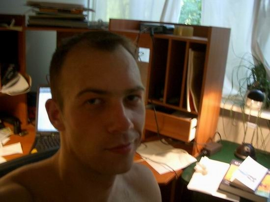

Thorsten Ottosen
 Thorsten Ottosen holds a Bsc in Computer Science at Aalborg University, Denmark. After having studied mathematics at University of Technology in Sydney, Australia, he has now returned to Denmark to write a second thesis in the area of decision support systems. His first thesis was in computer graphics since he used to dream about making computer games.
Thorsten is also a co-owner and part-time employee of Dezide, a company that specializes is trouble-shooting programs based on Bayesian-network technology.
In his spare-time he codes/reads/hacks C++ and participates in ANSI/ISO C++ committee meetings. In his spare-time of his spare-time he enjoys jogging, reading, and being with family and friends.